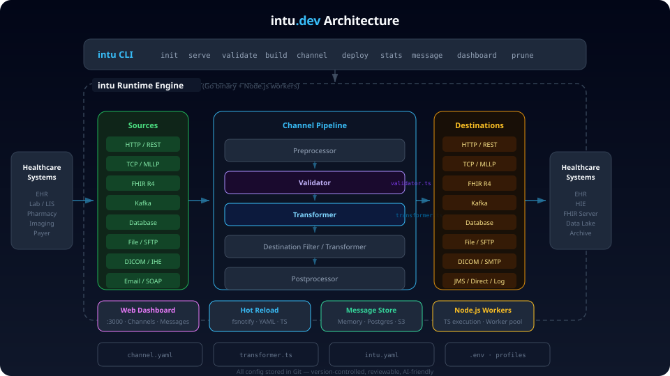

Getting Started
Build healthcare integration pipelines with YAML and TypeScript
What is intu?
intu is a Git-native healthcare interoperability framework. It provides a Go-based CLI that combines YAML configuration with TypeScript transformers to build, validate, and manage healthcare integration channels.
Projects are plain directories tracked in Git, making collaboration, code review, and version control natural parts of your integration workflow. intu is AI-friendly by design — structured schemas and declarative config make it straightforward for AI assistants to generate and modify pipelines.
Install
npm install -g intu-devQuick Start
Scaffold a new project and start running in two commands:
1. Create a new project
intu init my-projectintu init scaffolds the project and runs npm install automatically.
2. Start the engine
cd my-project
npm run devintu serve auto-compiles TypeScript before starting. No separate build step is needed.
3. Add a channel (optional)
intu c my-channel4. Validate configuration (optional)
intu validateProject Structure
After running intu init, your project directory looks like this:
my-project/
├── intu.yaml # Root config + named destinations
├── intu.dev.yaml # Dev profile overrides
├── intu.prod.yaml # Production profile
├── .env # Environment variables
├── package.json # npm scripts + dependencies
├── tsconfig.json # TypeScript compiler config
├── src/
│ ├── types/
│ │ └── intu.d.ts # IntuMessage & IntuContext type declarations
│ └── channels/
│ ├── http-to-file/ # JSON pass-through channel
│ │ ├── channel.yaml
│ │ ├── transformer.ts
│ │ └── validator.ts
│ └── fhir-to-adt/ # FHIR Patient → HL7 ADT channel
│ ├── channel.yaml
│ ├── transformer.ts
│ └── validator.ts
├── Dockerfile
├── docker-compose.yml
└── README.md| File / Directory | Purpose |
|---|---|
intu.yaml |
Root configuration — runtime settings, destinations, and global options |
intu.dev.yaml / intu.prod.yaml |
Profile-specific overrides layered on top of the base config |
.env |
Environment variables referenced by ${VAR} in YAML files |
package.json |
npm scripts (dev, serve, start, build) and dependencies |
tsconfig.json |
TypeScript compiler configuration |
src/types/ |
TypeScript type declarations — intu.d.ts (IntuMessage, IntuContext) |
src/channels/ |
Channel directories (any nesting depth), each containing its own YAML config and TypeScript files |
Architecture Overview
Messages flow through a defined pipeline: source → preprocessor → validator → filter → transformer → destination(s). Each stage is optional and configurable per channel.

Core Concepts
src/channels/, and channels can be organized in subdirectories at any depth (e.g. src/channels/vendor/fhir-to-adt/).
channel.yaml.
intu.yaml and referenced by channels.
Supported types include Kafka, HTTP, TCP, file, database, SFTP, SMTP, DICOM, FHIR, and more.
intu.yaml is merged with a profile file such as intu.dev.yaml
or intu.prod.yaml, allowing you to vary settings per environment without
duplicating configuration.
Runtime Features
channel.yaml or .ts files and the affected channel
restarts automatically. TypeScript is recompiled on the fly — no manual
rebuild needed.
intu message list.
globalMap, channelMap,
responseMap, and connectorMap — available in every
transformer and filter context.
code_templates directories and
reference them across channels for consistent reuse of mapping logic.